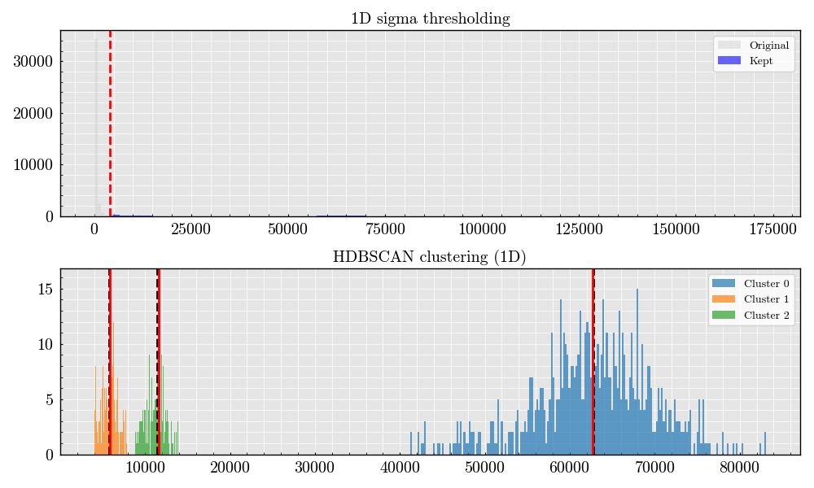

Note
Go to the end to download the full example code.
Workflow example#
Just a dummy example to illustrate the workflow examples gallery.

- 
/opt/hostedtoolcache/Python/3.13.11/x64/lib/python3.13/site-packages/RosettaX/reader.py:531: UserWarning: This figure includes Axes that are not compatible with tight_layout, so results might be incorrect.
fig.canvas.draw_idle()
from RosettaX.reader import FCSFile
from RosettaX.directories import fcs_data
from RosettaX.clusterings import SigmaThresholdHDBSCAN
file_dir = fcs_data / "sample.fcs"
data = FCSFile(fcs_data / "sample_0.fcs")
data.read_all_data()
x = "488Org(Peak)"
y = "405LALS(Peak)"
figure = data.plot(
figure_size=(6, 6),
x=x,
y=y,
log_hist=False,
ylim=(0.4e6, None),
xlim=(1000, 100000),
tight_layout=False
)
model = SigmaThresholdHDBSCAN()
labels, means, modes, clean_data, mask = model.fit(
x=data.data[x][:40_000],
n_clusters=3, # ask for two merged clusters
threshold_x=4000, # tweak according to data
min_cluster_size=100, # you can tweak; start not too high
debug=True,
)
Total running time of the script: (0 minutes 4.456 seconds)